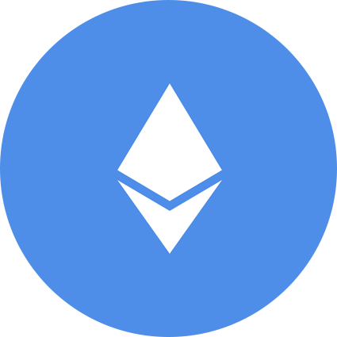
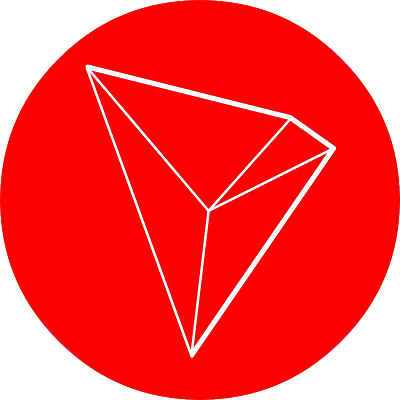
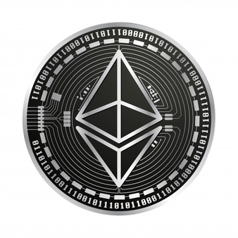
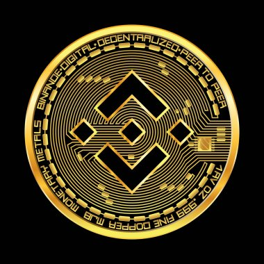
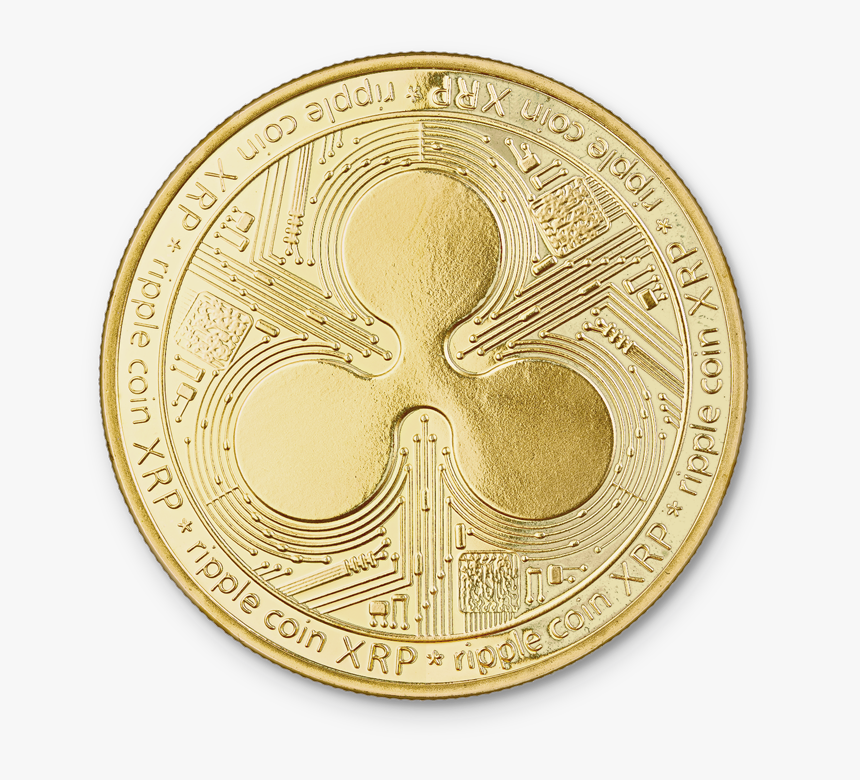
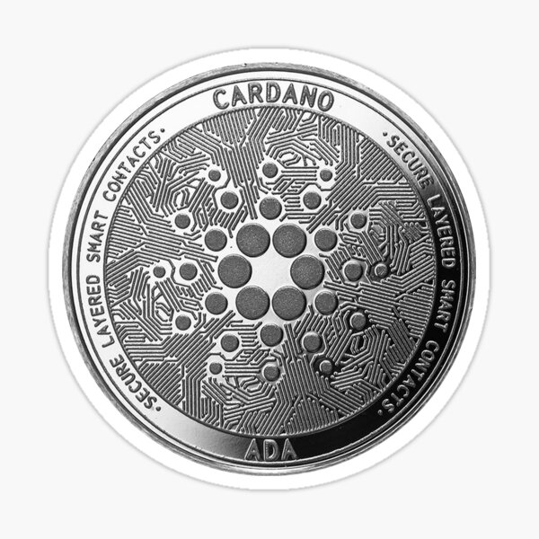

WHAT ARE CRYPTOCURRENCIES?
Before we take a closer look at some of these alternatives to Bitcoin, let’s step back and briefly examine
what we mean by terms
like cryptocurrency and altcoin. A cryptocurrency, broadly defined, is virtual or digital money which takes the
form of tokens or
“coins.” While some cryptocurrencies have ventured into the physical world with credit cards or other projects,
the large majority
remain entirely intangible.
The “crypto” in cryptocurrencies refers to complicated cryptography which allows for the creation and
processing of digital
currencies and their transactions across decentralized systems. Alongside this important “crypto” feature of
these
currencies is a common commitment to decentralization, cryptocurrencies are typically developed as code by teams
who build in mechanisms for issuance (often, although not always, through a process called “mining”) and other
controls.
|
|
Cryptocurrencies are almost always designed to be free from government manipulation and control, although as
they have grown
more popular this foundational aspect of the industry has come under fire. The currencies modeled after
Bitcoin are collectively
called altcoins, and in some cases “shitcoins,” and have often tried to present themselves as modified or
improved versions of
Bitcoin. While some of these currencies may have some impressive features that Bitcoin does not, matching
the level of security
that Bitcoin’s networks achieves has largely yet to be seen by an altcoin.
|
What You Need To Know?
- A cryptocurrency, broadly defined, is currency that takes the form of tokens
or “coins” and exists on a distributed and decentralized ledger.
- Beyond that, the field of cryptocurrencies has expanded dramatically since Bitcoin was
launched over a decade ago, and the next great digital token may be released tomorrow.
- Bitcoin continues to lead the pack of cryptocurrencies in terms of market capitalization, user base, and
popularity.
- Other virtual currencies such as Ethereum are being used to create decentralized financial
systems for those without access to traditional financial products.
- Some altcoins are being endorsed as they have newer features than Bitcoin, such as the ability to handle
more transactions per second or use different consensus algorithms like proof-of-stake.
Example of Some Cryptocurrencies:
| Logo |
Token Name |
Symbol |
 |
Bitcoin |
BTC |
|  |
Ethereum |
ETH |
|  |
Tron |
TRX |
|
Cardano |
ADA |
|
Binance |
BNB |
 |
Ripple |
XRP |
Informations and history about cryptocurrency
|
|
Bitcoin
Bitcoin is a cryptocurrency, a digital asset designed to work as a medium of exchange that uses
cryptography to control its creation and management,
rather than relying on central authorities. The history of Bitcoin started with the invention and
implemented by the presumed pseudonymous Satoshi Nakamoto,
who integrated many existing ideas from the cypherpunk community. Over the course of bitcoin's history,
it has undergone rapid growth to become a significant currency both on- and offline. From the mid 2010s,
some businesses
began accepting bitcoin in addition to traditional currencies.
Prior to the release of bitcoin, there were a number of digital cash technologies starting with the
issuer based ecash protocols of David Chaum and Stefan Brands.
The idea that solutions to computational puzzles could have some value was first proposed by
cryptographers Cynthia Dwork and Moni Naor in 1992.
The idea was independently rediscovered by Adam Back who developed hashcash, a proof-of-work scheme for
spam control in 1997.
The first proposals for distributed digital scarcity based cryptocurrencies were Wei Dai's b-money and
Nick Szabo's bit gold. Hal Finney developed reusable proof of work
(RPOW) using hashcash as its proof of work algorithm. In the bit gold proposal which proposed a
collectible market-based mechanism for inflation control,
Nick Szabo also investigated some additional aspects including a Byzantine fault-tolerant agreement
protocol based on quorum addresses to store and transfer
the chained proof-of-work solutions, which was vulnerable to Sybil attacks, though.
|
Ethereum
Ethereum is a decentralized, open-source blockchain with smart contract functionality. Ether (ETH) is the
native cryptocurrency of the platform.
It is the second-largest cryptocurrency by market capitalization, after Bitcoin. Ethereum is the most
actively used blockchain.
Ethereum was proposed in 2013 by programmer Vitalik Buterin. Development was crowdfunded in 2014, and the
network went live on
30 July 2015, with an initial supply of 72 million coins. The Ethereum Virtual Machine (EVM) can execute
scripts
and run decentralized applications. Ethereum is used for decentralized finance, the creation and exchange
of NFTs,
and has been utilized for many initial coin offerings.
In 2016, a hacker exploited a flaw in a third-party project called The DAO and stole $50 million of
Ether.
As a result, the Ethereum community voted to hard fork the blockchain to reverse the theft and Ethereum
Classic (ETC)
continued as the original chain. Ethereum has started implementing a series of upgrades called Ethereum
2.0,
which includes a transition to proof of stake and aims to increase transaction throughput using
sharding.
|

|
|

|
Binance
Binance is a cryptocurrency exchange that provides a platform for trading various cryptocurrencies.
As of April 2021, Binance was the largest cryptocurrency exchange in the world in terms of trading volume.
Binance was founded by Changpeng Zhao, a developer who had previously created high frequency trading
software.
Binance was initially based in China, but later moved out of China due to China's increasing regulation of
cryptocurrency.
CEO Changpeng Zhao had previously founded Fusion Systems in 2005 in Shanghai; the company built
high-frequency
trading systems for brokers. In 2013 he joined Blockchain.info as the third member of the cryptocurrency
wallet’s team.
He also worked at OKCoin as CTO for less than a year, a platform for spot trading between fiat and
digital assets.
The company was founded in China but moved its servers and headquarters out of China and into Japan in
advance of the
Chinese government ban on cryptocurrency trading in September 2017. By March 2018 the company had
established offices in Taiwan.
As of January 2018 it was largest cryptocurrency exchange with a market capitalization of $1.3 billion.
|
Ripple XRP
Ripple (XRP) is a peer-to-peer powered cryptocurrency designed to work seamlessly with the Internet to
allow a fast,
direct and secure way to send payments on the web. Ripple as a protocol is a system of the real time gross
settlements (RTGS),
exchange and money transfer system. Another name is Ripple transaction protocol (RTXP),
or Ripple protocol. It is built upon a distributed open Internet protocol, consensus ledger and its own
currency called XRP.
Ripple coin was first implemented in 2004 by Ryan Fugger, a Web developer in Vancouver, B.C., Canada.
In 2005, Fugger began to
build Ripplepay as a financial service to provide secure payment options to members of an online
community via a global network.
On the basis of this protocol, a new digital currency system appeared in May 2011, for which its own
crypto currency XRP was issued.
This led to the development of a new system in 2011 by Jed McCaleb. It was designed to eliminate
Bitcoin's reliance on
centralized exchanges, use less electricity than Bitcoin, and perform transactions much more quickly
than Bitcoin.
RTXP was launched in 2012, its main goal is to ensure “secure, instant and almost free global money
operations of any
size without any chargebacks”. The protocol supports payment with fiat currency, crypto currency, goods
or any other units
like passenger bonus miles or mobile minutes. As the transactions in this system are confirmed by the
consensus
of network participants instead of mining like in the Bitcoin network, it causes more trust of banks and
payment networks.
For example, the RTXP is used by the Earthport service payment system, which is working in 65 countries,
including the
Bank of America and the HSBC bank.
Today, XRP is amongst the largest digital currencies in the capitalization.
|

|
|

|
Cardano
Cardano is a public blockchain platform that aims to run smart contracts. It is open source and
decentralized,
with consensus achieved using proof of stake. It can facilitate peer-to-peer transactions with its
internal
cryptocurrency Ada. The project differentiates itself from competitors by using a research-driven
approach — the platform
is designed through peer-reviewed papers written by computer scientists and academics.
Cardano was founded in 2015 by Ethereum co-founder Charles Hoskinson. The development of the project is
overseen and
supervised by the Cardano Foundation based in Zug, Switzerland.
The platform began development in 2015 and was launched in 2017 by Charles Hoskinson, a co-founder of
Ethereum and BitShares.
Hoskinson left Ethereum after a dispute with its co-founder Vitalik Buterin; Hoskinson wanted to accept
venture capital and
create a for-profit entity while Buterin wanted to keep it running as a nonprofit organization. After
leaving he co-founded IOHK,
a blockchain engineering company, whose primary business is the development of Cardano, alongside the
Cardano Foundation and Emurgo.
The platform is named after Gerolamo Cardano and the cryptocurrency after Ada Lovelace.
The currency debuted with a market cap of $600 million. By the end of 2017, it had a market cap of $10
billion,
and reached a value of $33 billion briefly in 2018 before a general tightening of the crypto market
dropped its value
back to $10 billion. According to Mashable, Cardano claims that it overcomes existing problems in the
crypto market:
mainly that Bitcoin is too slow and inflexible, and that Ethereum is not safe or scalable.
|